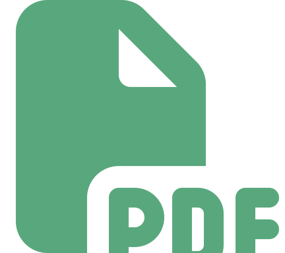

Portada
Universidad de Antioquia · Ingeniería de Sistemas · 2508307

Apertura
Transición
En la sesión anterior aprendiste a estructurar datos con JSON y a persistirlos en disco con Gson. Ese dato estructurado suele ser el insumo de algo más: un reporte, una boleta o un comprobante que una persona necesita leer, imprimir o archivar. Hoy cierras ese ciclo generando el documento final en formato PDF, directamente desde Java.
Concepto
Generar PDF programáticamente es una necesidad constante en software de gestión — cualquier sistema que produzca un documento formal a partir de datos, sin intervención manual, lo necesita:
Concepto
Apache PDFBox es una librería de código abierto de la Apache Software Foundation para crear, leer y modificar documentos PDF desde Java. Se agrega como dependencia Maven en el pom.xml:
<dependency>
<groupId>org.apache.pdfbox</groupId>
<artifactId>pdfbox</artifactId>
<version>3.0.3</version>
</dependency>Concepto
Todo documento en PDFBox parte de un objeto PDDocument, que representa el archivo PDF completo en memoria, y al menos una PDPage, que representa una hoja dentro de ese documento:
import org.apache.pdfbox.pdmodel.PDDocument;
import org.apache.pdfbox.pdmodel.PDPage;
PDDocument document = new PDDocument();
PDPage page = new PDPage();
document.addPage(page);Con esto ya existe un documento válido, aunque todavía sin contenido — una hoja en blanco.
Concepto
Para dibujar contenido sobre una página se abre un PDPageContentStream, el "lápiz" con el que se escribe sobre esa hoja. Escribir texto requiere un bloque delimitado por beginText() y endText():
import org.apache.pdfbox.pdmodel.PDPageContentStream;
import org.apache.pdfbox.pdmodel.font.PDType1Font;
import org.apache.pdfbox.pdmodel.font.Standard14Fonts;
PDPageContentStream content = new PDPageContentStream(document, page);
content.beginText();
content.setFont(new PDType1Font(Standard14Fonts.FontName.HELVETICA), 12);
content.newLineAtOffset(50, 700);
content.showText("Boletín de calificaciones — Ana Gómez");
content.endText();Concepto
| Método | Qué hace |
|---|---|
beginText() | Abre un bloque de escritura de texto |
setFont(fuente, tamaño) | Define la tipografía y el tamaño en puntos |
newLineAtOffset(x, y) | Posiciona el cursor en coordenadas (x, y) desde la esquina inferior izquierda |
showText("...") | Dibuja el texto en la posición actual |
endText() | Cierra el bloque de escritura |
El sistema de coordenadas de PDF empieza en la esquina inferior izquierda de la página (0, 0) — al contrario de muchos sistemas gráficos que empiezan arriba.
Concepto
Cada llamada a newLineAtOffset(x, y) dentro del mismo bloque de texto se mueve en relación a la posición anterior, no a coordenadas absolutas — por eso, para escribir varias líneas seguidas, basta con desplazar hacia abajo en el eje Y:
content.beginText();
content.setFont(new PDType1Font(Standard14Fonts.FontName.HELVETICA), 12);
content.newLineAtOffset(50, 700);
content.showText("Boletín de calificaciones");
content.newLineAtOffset(0, -20);
content.showText("Estudiante: Ana Gómez");
content.newLineAtOffset(0, -20);
content.showText("Promedio: 4.35");
content.endText();Concepto
PDFBox no tiene un componente de tabla nativo — a diferencia de HTML, no existe una etiqueta que dibuje filas y columnas automáticamente. Para simular una tabla simple, hay que calcular manualmente en qué posición (x, y) va cada celda, alineando columnas con coordenadas X fijas:
float[] columnasX = {50, 200, 350}; // posición X de cada columna
String[] fila = {"Corte 1", "Corte 2", "Corte 3"};
content.beginText();
content.setFont(new PDType1Font(Standard14Fonts.FontName.HELVETICA), 11);
content.newLineAtOffset(columnasX[0], 650);
content.showText(fila[0]);
content.endText();
// Repetir beginText()/endText() por cada celda,
// usando newLineAtOffset(columnasX[i], y) para ubicarlaInteracción
En parejas: una hoja de PDFBox mide 612 x 792 puntos (tamaño carta). Necesitan escribir un título centrado arriba, y tres filas de una tabla de dos columnas debajo, con espacio parejo entre filas.
6 minutos · no hace falta escribir el código, solo los números
Concepto
Un PDDocument reserva recursos (memoria, archivos temporales) mientras está abierto, así que debe guardarse con save() y cerrarse con close() — igual que un FileWriter o un Scanner deben cerrarse tras usarlos:
document.save("boletin.pdf");
document.close();Olvidar close() deja recursos abiertos innecesariamente, el mismo problema que viste con archivos y por el que existe try-with-resources.
Concepto
PDDocument implementa Closeable, igual que FileReader y FileWriter — por eso se puede abrir dentro de un try-with-resources y Java se encarga de cerrarlo automáticamente, incluso si ocurre una excepción a mitad de la generación del PDF:
try (PDDocument document = new PDDocument()) {
PDPage page = new PDPage();
document.addPage(page);
try (PDPageContentStream content = new PDPageContentStream(document, page)) {
content.beginText();
content.setFont(new PDType1Font(Standard14Fonts.FontName.HELVETICA), 12);
content.newLineAtOffset(50, 700);
content.showText("Boletín de calificaciones");
content.endText();
}
document.save("boletin.pdf");
} catch (IOException e) {
System.out.println("Error al generar el PDF: " + e.getMessage());
}Concepto
Nota en el ejemplo anterior que el PDPageContentStream está en su propio bloque try-with-resources, anidado dentro del de PDDocument. Esto no es casualidad: el contenido escrito no se refleja de forma confiable en la página hasta que el content stream se cierra — si se llama a document.save() antes de cerrarlo, el texto puede no aparecer o el archivo puede quedar corrupto.
Regla práctica: cerrar siempre el PDPageContentStream antes de guardar el documento.
Concepto
Siguiendo el principio de responsabilidad única (Unidad 3, SOLID), conviene separar dos cosas que a menudo se mezclan en un solo método: de dónde vienen los datos (por ejemplo, un List<Estudiante> leído de un JSON) y cómo se escriben en el PDF. Un método generarBoletin(List<Estudiante> estudiantes, String rutaSalida) que reciba los datos ya listos es más fácil de probar y reutilizar que uno que también los busca o los calcula.
Concepto
Con lo visto en las dos últimas sesiones, el flujo completo de un reporte real queda así:
.json con Gson, usando TypeToken si es una lista.PDPageContentStream.PDDocument dentro de un try-with-resources.El dato nunca deja de ser un objeto Java normal entre el paso 1 y el paso 3 — JSON y PDF son solo los formatos de entrada y salida.
Síntesis
PDDocument + PDPage + PDPageContentStream.beginText()/endText(), con coordenadas que parten de la esquina inferior izquierda.PDDocument implementa Closeable — usar try-with-resources, cerrando siempre el PDPageContentStream antes de save().Cierre
Con esta sesión cierra la Unidad 4 de Técnicas de Programación.